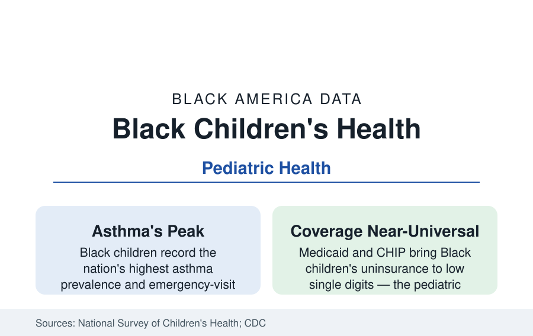

Black Public Health
Black Children's Health: Asthma, Weight, and the Adolescent Turn
Black children carry the nation's highest asthma rates and rising adolescent mental-health needs, inside a well-insured, well-vaccinated pediatric system. The CDC and NSCH data.

Black children's health presents the section's most paradoxical ledger: a pediatric system that reaches nearly every child (insurance coverage in the high nineties percent through Medicaid and CHIP, vaccination series completion broadly comparable) alongside outcome gaps that open in the delivery room and widen by condition — asthma above all — through adolescence. The child health data describe both the system's best infrastructure and its most frustrating remainder. This article reports the pediatric file.
The Early Years: From the Infant File Forward
The first years continue the maternal-infant profile: the infant mortality gap's survivors carry its correlates forward — prematurity's developmental sequelae in the early-intervention data (Black toddlers referred later to the IDEA Part C services in the state data, despite screening parity on paper), lead exposure's peak window (the lead file's one-to-three-year-olds), and the vaccination schedule's completion rates (broad parity in the national series data, with the kindergarten-entry exemption clusters marking geography more than race in the recent files). The well-child visit data show high contact — the pediatric system touches Black children more reliably than the adult system touches any Black population — which makes the outcome files that follow a study in what contact alone cannot fix: the environment the child returns to between visits.
Asthma: The Pediatric Centerpiece
The asthma file is the children's data's summit: prevalence in Black children running at roughly one in ten to one in eight in the CDC's recent years — the nation's highest — with emergency-department visits and hospitalizations at multiples of the white rates and the small but absolute mortality gap of the asthma profile. The mechanism stack is the environmental file made flesh: housing quality (the roach and mouse allergen data of the inner-city asthma studies, mold, the gas-stove and traffic-pollution exposures of the district maps), viral triggers in crowded childcare, controller-medication adherence ground down by pharmacy access and caregiver work schedules, and school-based management varying by the school nurse data (the nurse-to-student ratios of majority-Black districts, thin as every school resource in the funding file). The evaluated interventions are this file's pride: the home-visiting asthma programs and school-based health centers posting the emergency-visit reductions in the program data, the healthy-homes remediation posting attack reductions that pay for themselves in avoided admissions in the health-economics analyses.
Weight, Teeth, and the School-Day Body
Childhood obesity's data run the adult file backward in age: Black children and adolescents record the highest obesity rates in the NHANES tables (roughly a quarter of adolescents in recent editions), the drivers decomposed in the food-environment and activity data (the neighborhoods' play space and safety, the school PE and recess minutes' erosion in the underfunded districts, the beverage and marketing exposures the consumer research quantifies). The oral file's children: untreated decay at the highest rates, the school sealant programs' data the counter-proof. Vision and hearing screening failures follow the referral-completion gap (screened at school, uncorrected at the specialist — the follow-through data's quiet scandal), and the sports-injury and concussion data of the youth athletics economy (the football pipeline's health ledger) complete the school-day body.
Adolescence: The Turn in the Data
The adolescent files darken on schedule. The Youth Risk Behavior data record the mental-health turn: persistent sadness and hopelessness reported by roughly two in five Black high school students in the recent surveys (the era's universal rise, Black students' reports climbing from a lower historic base), suicide's rate among Black adolescents — and especially young Black males — rising across the decade in the vital statistics at the trend the field's alarms track, against protective factors the same surveys measure (family connectedness, school belonging, the church file's youth participation). The sexual-health data show the system's best adolescent news (teen birth rates at historic lows, contraceptive access's measurable effects) beside the STI rates' persistent elevations. The substance data record Black adolescents as the nation's lightest-using major group — alcohol, vaping, and cannabis initiation all at or below peers' rates in the Monitoring the Future tables — an underreported protective datum that the prevention field studies for what the culture is doing right.
The Systems and the Transition Cliff
The pediatric infrastructure itself is the asset: the school-based health centers (two thousand-plus nationally, sited disproportionately in the districts of this file), the FQHC pediatric panels, Medicaid's EPSDT entitlement (the broadest benefit in American health law, its utilization data the measure of the reach), and the medical-home data's racial remainder. The file ends at the cliff it shares with the special-education profile: aging out — the transition from the pediatric system's near-universal reach to the adult system's male-pattern disengagement happening at eighteen to twenty-one in the coverage and continuity data, precisely where the young men's file begins. The children's data's lesson is that the reach is possible; the adult data ask why it is not kept.
Reading the Children's Data
Black children's health is the proof of concept and the indictment in one table: insure them and they come, vaccinate them and it works — and the asthma still fills the emergency rooms because the housing does not change between visits. The pediatric data measure what medicine can do; the gaps measure everything around the medicine, in the years when it matters most.
More in Black Public Health
Hypertension Among Black Adults: Prevalence, Control, and Consequences
About 55 percent of Black adults have hypertension — the highest rate of any U.S. group. Prevalence, onset, control, and the stroke, heart, and kidney consequences in the data.
Diabetes Among Black Adults: Prevalence and Complications
Nearly one in five Black adults has diabetes, diagnosed or undiagnosed — and its complications fall with particular weight. The CDC data on prevalence, control, and outcomes.
Black Life Expectancy: The Gap at Birth and Its Causes
Black life expectancy at birth is about 73 years, roughly five years below the national figure — the summary measure of every health gap in this section. The CDC data.
Source: National Survey of Children's Health; Centers for Disease Control and Prevention children's health data; National Health Interview Survey child samples; Youth Risk Behavior Survey.